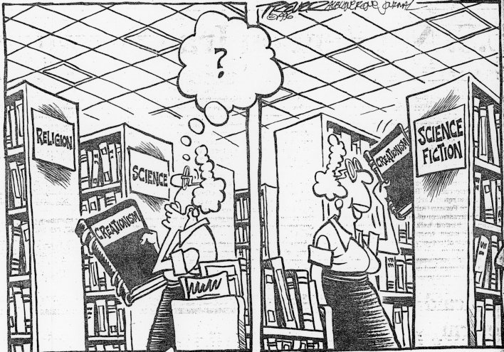

- Lecture #1: Introduction
- Reading: The Church of the All Net-a virtual house of worship – Tom Dworetzky
- Lecture #2: Pseudo-Religion
- Lecture #3: Sentient Life
- Reading: The Pope of the Chimps – Robert Silverberg
- Reading: The Vitanuls – John Brunner
- Lecture #4: The Meaning & Philosophy of Star Trek
- Lecture #5: Theology Through Time & Space
- Reading: The Star – Arthur C. Clarke
- Reading: The Emigrant – Joel Rosenberg
- Reading: When Jesus Comes Down The Chimney – Ian Watson
- Reading: The Theology of Water – Hilbert Schenck
- Reading: Proselytes – Gregory Benford
- Lecture #6: Theology on Other Worlds I
- Reading: Christus Apollo – Ray Bradbury
- Lecture #7: Theology on Other Worlds II
- Lecture #8: Messiah Figures – Dune
- Lecture #9: Stranger in A Strange Land
- Lecture #10: Gnostic Themes in Science Fiction
- Lecture #11: Apocalypse I
- Reading: Nightfall – Isaac Asimov
- Lecture #12: Apocalypse II
- Bonus Lecture Materiel